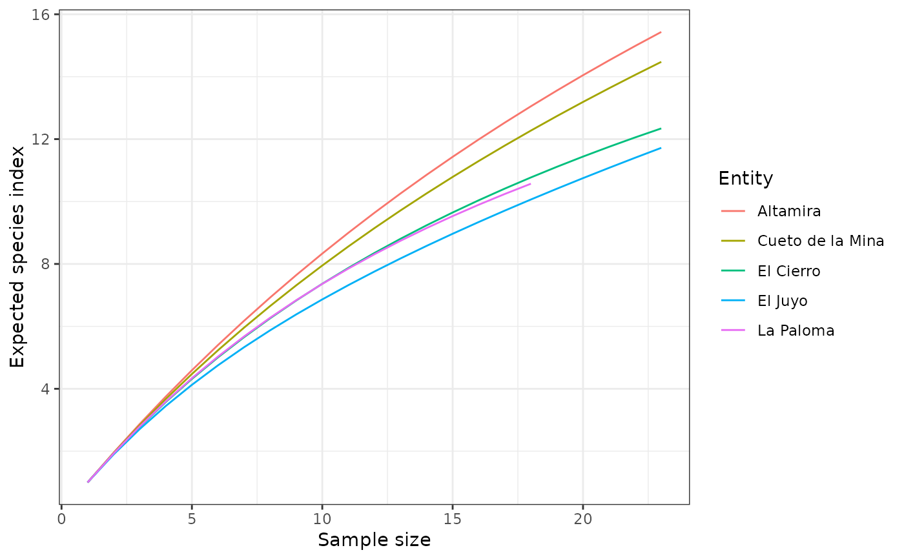
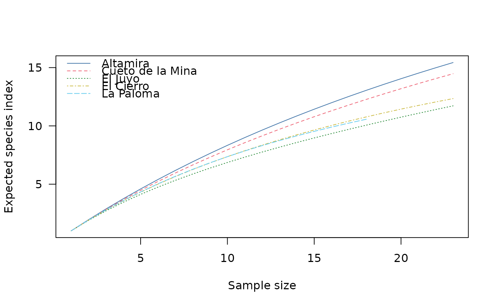

Rarefaction
Usage
rarefaction(object, ...)
index_baxter(x, ...)
index_hurlbert(x, ...)
# S4 method for matrix
rarefaction(object, sample = NULL, method = c("hurlbert", "baxter"), step = 1)
# S4 method for data.frame
rarefaction(object, sample = NULL, method = c("hurlbert", "baxter"), step = 1)
# S4 method for numeric
index_baxter(x, sample, ...)
# S4 method for numeric
index_hurlbert(x, sample, ...)Arguments
- object
A \(m \times p\)
numericmatrixordata.frameof count data (absolute frequencies giving the number of individuals for each category, i.e. a contingency table). Adata.framewill be coerced to anumericmatrixviadata.matrix().- ...
Currently not used.
- x
A
numericvector of count data (absolute frequencies).- sample
A length-one
numericvector giving the sub-sample size. The size of sample should be smaller than total community size.- method
A
characterstring or vector of strings specifying the index to be computed (see details). Any unambiguous substring can be given.- step
An
integergiving the increment of the sample size.
Value
rarefaction()returns a RarefactionIndex object.index_*()return anumericvector.
Rarefaction Measures
The following rarefaction measures are available for count data:
baxterBaxter's rarefaction.
hurlbertHurlbert's unbiased estimate of Sander's rarefaction.
Details
The number of different taxa, provides an instantly comprehensible expression of diversity. While the number of taxa within a sample is easy to ascertain, as a term, it makes little sense: some taxa may not have been seen, or there may not be a fixed number of taxa (e.g. in an open system; Peet 1974). As an alternative, richness (\(S\)) can be used for the concept of taxa number (McIntosh 1967).
It is not always possible to ensure that all sample sizes are equal and the number of different taxa increases with sample size and sampling effort (Magurran 1988). Then, rarefaction (\(E(S)\)) is the number of taxa expected if all samples were of a standard size (i.e. taxa per fixed number of individuals). Rarefaction assumes that imbalances between taxa are due to sampling and not to differences in actual abundances.
References
Baxter, M. J. (2001). Methodological Issues in the Study of Assemblage Diversity. American Antiquity, 66(4), 715-725. doi:10.2307/2694184 .
Hurlbert, S. H. (1971). The Nonconcept of Species Diversity: A Critique and Alternative Parameters. Ecology, 52(4), 577-586. doi:10.2307/1934145 .
Sander, H. L. (1968). Marine Benthic Diversity: A Comparative Study. The American Naturalist, 102(925), 243-282.
See also
Other diversity measures:
heterogeneity(),
occurrence(),
richness(),
similarity(),
simulate(),
turnover()
Examples
## Data from Conkey 1980, Kintigh 1989
data("cantabria")
## Replicate fig. 3 from Baxter 2011
rare <- rarefaction(cantabria, sample = 23, method = "baxter")
plot(rare, panel.first = graphics::grid())

## Change graphical parameters
col <- khroma::color("bright")(5)
plot(rare, col = col, lty = 1:5)
